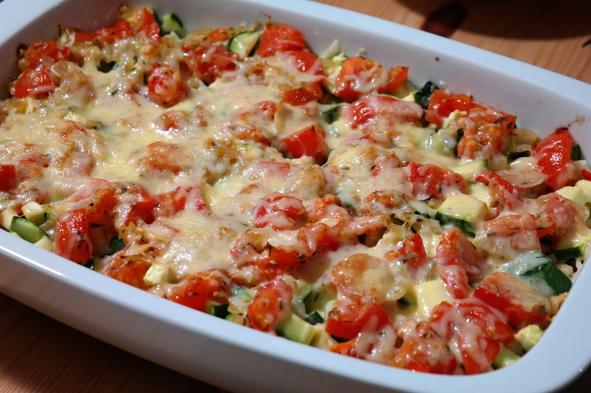

Hirse-Gemüse Gratin
60 Min
simpel
07.03.2024
| 80g g Hirse |
| 0.25 TL Salz |
| 0.5 Zwiebel(n) |
| 1 Karotte(n) |
| 0.5 Zucchetti(s) |
| 0.5 Peperoni(s) |
| 0.5 EL Olivenöl |
| 1 EL Tomatenmark |
| 100 g Mozzarella |
| Gewürze nach Wahl |
Zubereitung
ca 40 Minuten
Gesamtzeit ca 60 Minuten
Wasser aufkochen und salzen. Die Hirse dazugeben und ca. 20-30 min auf mittlerer Stufe köcheln lassen. Die Karotten schälen und mit dem anderen Gemüse klein schneiden. Öl in eine Pfanne geben und das Gemüse mit etwas Wasser und Gewürzen ca. 15min dämpfen. Danach eine Gratinform mit etwas Olivenöl ölen, damit der Gratin weniger klebt. Nun die Hirse auf dem Boden verteilen und das Tomatenmark gleichmässig darauf verteilen. Nun das Gemüse darauf verteilen. Den Mozzarella kurz kleinschneiden und darüber verteilen. Den Gratin nach Belieben würzen. Das Ganze für ca. 20 min in den Backofen bis der Käse geschmolzen ist.
Rezept erstellt von